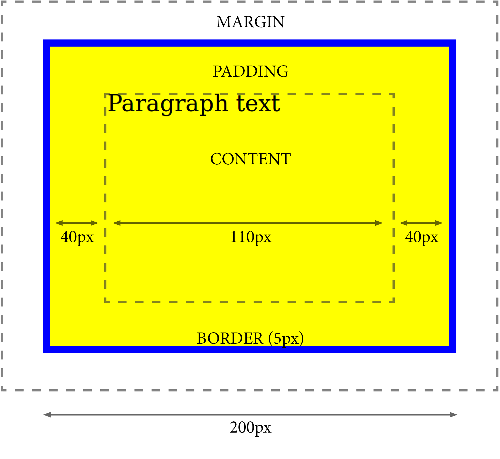
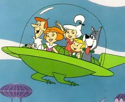
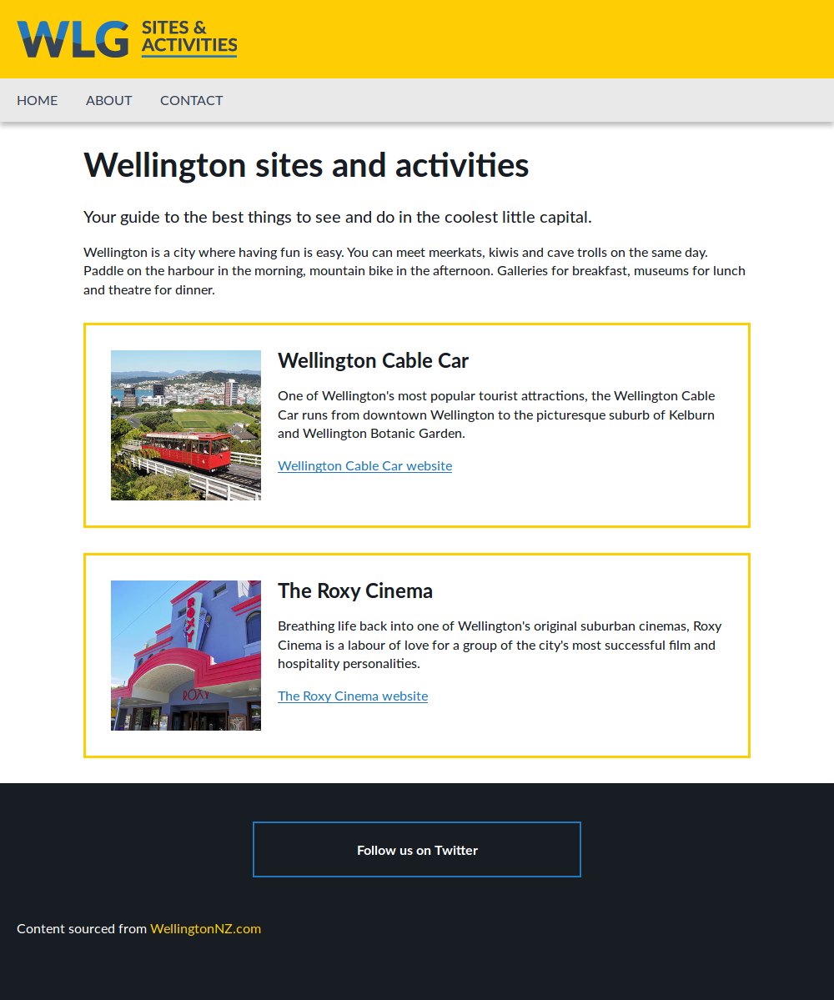

Intro to HTML & CSS
Presented by Toni GardinerIn case of emergency
Slides & files
Overview
- HTML
How markup works, basic elements, links, images, lists - CSS
Anatomy of a CSS rule, specificity, box model Types of styling we can apply, display and positioning Workflow and debugging - Build a web page
My background
- Front end developer (HTML/CSS)
- Web design, graphic design
- Art and design
Getting started
- Who has done some HTML before?
- CSS?
- Existing issue you’d like to resolve?
Questions
Please ask!
HyperText Markup Language (HTML)
The standard markup language for creating web pages and web applications.
HyperText
Text and links.
Markup Language
The good part!
Markup Language
A set of elements (aka tags) which can be applied to pieces of text to give them different meaning in a document.
It’s how the computer interprets your content.
Imagine you are a computer.
You are supposed to use the following sentence on a webpage:
This is a very dangerous liquid.
How does the computer know to give the words ‘very dangerous’ emphasis?
We have to tell it — mark it up!
This is a [start strong importance]very dangerous[end here please] liquid.
This is where the language bit comes in:
This is a <strong>very dangerous</strong> liquid.
gives us:
This is a very dangerous liquid.
Basic HTML page
<!DOCTYPE html>
<html lang="en">
<head>
<meta charset="utf-8">
<title>Title of the page (browser tab)</title>
</head>
<body>
<p>This is a <strong>very dangerous</strong> liquid.</p>
</body>
</html>
Let’s add the paragraph above
Code speak
- Indentation — tabs, spaces
- Comments —
- Tab complete — yay!
- Read the docs — these are your friends
Any others you’ve heard of?
Semantic
Relating to meaning in language or logic.
HTML elements:
Text
- Headings — <h1>, <h2>, <h3>, <h4>, <h5>, <h6>
- Paragraph — <p>
- Semantics — <strong>, <em> (different to <b>, <i>)
- Line break — <br> (self-closing)
- Span — <span> (non-semantic)
HTML elements:
Ordered list
- First place
- Second place
- Third place
- First place
- Second place
- Third place
HTML elements:
Unordered list
- Oranges
- Lemons
- Plums
- Oranges
- Lemons
- Plums
HTML elements:
Links
<a href="[path-to-file]">Link text</a>
In a sentence:
<p>Learn more about <a href="team.html">our team</a></p>
HTML elements: Links
Your site – Email link – External site
<a href="team.html">Page about your team</a>
<a href="mailto:toni@catalyst.net.nz">email Toni</a>
<a href="https://www.wikipedia.org">Wikipedia website</a>
<a href="https://www.wikipedia.org"
target="_blank" rel="noopener noreferrer">Wikipedia website</a>
HTML elements:
Images
<img src="cute-cat.png" alt="cute cat plays in grass" />
- Formats / .jpeg (.jpg) / .png / .gif / .svg
- Prepare image with design software
- Resolution/optimisation
- Change size/presentation with CSS
HTML elements:
Images
<img src="cute-cat.png" alt="cute cat plays in grass" />
- Formats / .jpeg (.jpg) / .png / .gif / .svg
- Prepare image with design software
- Resolution/optimisation
- Change size/presentation with CSS
HTML elements:
Parts of a web page
- <header>
- <nav>
- <section>
- <aside>
- <footer>
- <div> (non-semantic)

The docs
Cascading Style Sheets (CSS)
A language used for describing the presentation of a document written in a markup language.
CSS
We’re using it to Style the page
It’s separate from the HTML (is its own Sheet)
It’s Cascading*
*We’ll get to this part soon
HTML
Content
CSS
Presentation
Link to your CSS file
In the <head> section of your HTML document:
Note: not in the <header>!
Working with HTML
HTML
<p>Text</p>
CSS
p { ... }
A simple CSS rule
p {
color: green;
font-weight: bold;
}
A simple CSS rule
p { /* selector */
color: green; /* rule */
font-weight: bold; /* rule */
}
Let’s get more specific
There are different ways of referring to a specific element or elements on the page.
In the HTML, we give elements either a
class or an ID (or both!).
Paragraph which needs different styling
Paragraph which is standard
Paragraph which needs different styling
Paragraph which is standard
Now we can refer to the class name in the CSS
For a class, we use a period:
.intro {
font-size: 20px; /* note: default is 16px */
}
A class can be used more than once
Using a class
Paragraph which needs different styling
To refer to a class, we use a period:
.intro {
font-size: 20px;
}
A class can be used more than once
Using an ID
Elephants are big
To refer to an ID, we use a hash:
#elephant-info {
color: green;
}
An ID is unique — it can only be used once.
HTML
<p>Text</p>
<input id="vote">
<p class="time">Text</p>
<p class="time new">Text</p>
CSS
p { ... }
#vote { ... } /* unique */
.time { ... } /* resuable */
.time.new { ... }
Inheritance and specificity
The great thing about CSS is that we can stack the selectors.
Let’s say we have this HTML:
Blah blah first link blah
Blah second link blah
And we want to make only the second link green
Let’s make a rule for that…
.fact a { color: green; }
This will only affect 'a' tags that are contained within elements that have the 'fact' class.
What happens if we also have a rule to make all the links blue?
a { color: blue; }
Most specific wins
The most specific rule will always be applied where possible
But the ordering of CSS rules is important
If two (or more) rules are equally specific, the lowest (bottommost) rule wins
Note:
- Class selectors
are more specific than element selectors - ID selectors
are more specific than class selectors
What can we do with CSS?
All sorts! Here are a few things we can adjust:
- Borders
- Padding
- Margins
- Widths
- Rounded corners
- Opacity
- Font size, weight, color*
- Background color*
*color!
Box model
Let’s make the example
div {
background-color: yellow;
padding: 30px 40px;
width: 200px;
height: 150px;
border: 5px solid blue;
margin: 30px;
box-sizing: border-box; /* see note* */
}
* Tells browser to account for any border and padding in the values you specify for an element's width and height. This typically makes it much easier to size elements.
Shorthand options
When declaring sizes, we can:
margin-top: 10px;
margin-right: 20px;
margin-bottom: 10px;
margin-left: 20px;
margin: 10px 20px 5px 15px; /* [top] [right] [bottom] [left] */
margin: 10px 20px 5px; /* [top] [right + left] [bottom] */
margin: 10px 20px; /* [top + bottom] [right + left] */
margin: 20px; /* [all values are the same] */
Inline, block and inline-block
Note: examples use the same HTML
Display: inline
Text without
a {
display: inline; /* note: default */
padding-bottom: 20px;
}
Text without a link
Display: block
a {
display: block; /* change */
padding-bottom: 20px;
}
Text without a link
Display: inline-block
a {
display: inline-block; /* change */
padding-bottom: 20px;
}
Text without a link
Floats
 We want to 'float' this image so the text reflows around it. We can float things either to the left or the right. We need to be careful though, floated elements don't sit in the page properly any more. Read about 'clearfix' to learn about this.
img { float: left; margin: 0 20px 10px 0; }
Pseudo selectors
a:hover /* link is interacted with, but not clicked */
a:active /* link is being activated */
a:visited /* link has been visited */
p:first-child /* select the first paragraph (child) */
p:last-child /* select the last paragraph (child) */
Positioning
static /* default */
relative
absolute
fixed
The docs
Debugging & inspecting
Modern browsers give us great tools for checking how our CSS is being interpreted.
Right click on any element, choose 'inspect element' option, or press F12 to bring up the developer tools.
Chrome, Firefox, IE (Edge)
Build a web page
WLG Sites and Activities
- Header and logo
- Navigation (placeholder)
- Main content:
- Heading and introductory text
- Activities × 2: heading, image, text and link
- Footer and footer content

Extra
- Make the header and footer content line up with the main content.
- Include other HTML pages — link using nav area.
- Add Twitter logo.
- Make the web page responsive (hint: start by removing width).
Going forward
- Practise
- Content comes first
- Use docs
- Use browser developer tools (F12)
Resources
- HTML elements
https://developer.mozilla.org/en-US/docs/Web/HTML/Element - CSS syntax/properties/selectors
https://developer.mozilla.org/en-US/docs/Web/CSS/Reference - Browser support
http://caniuse.com/ - Colour contrast checker
https://webaim.org/resources/contrastchecker/